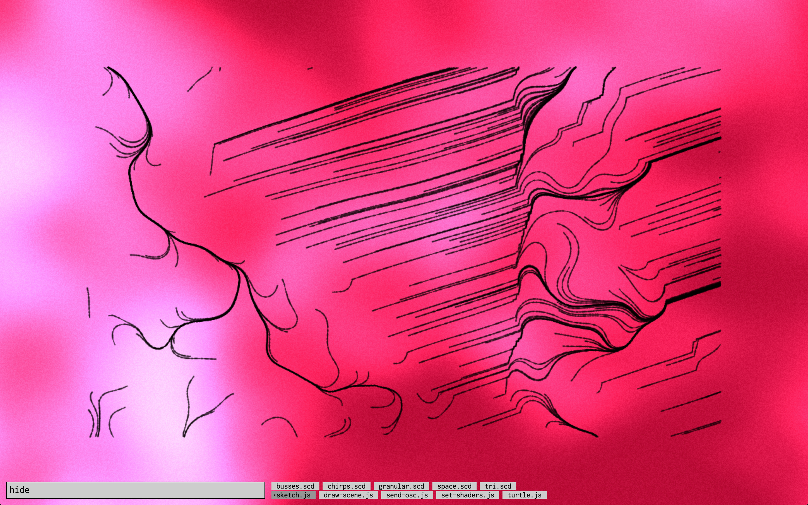
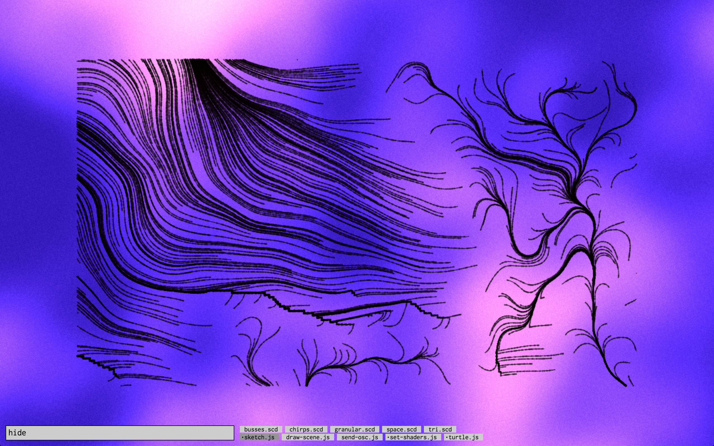
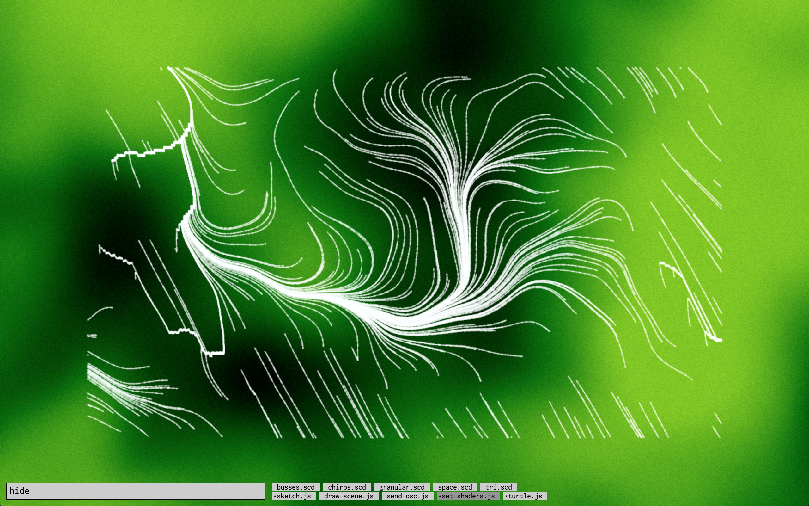

Colourful ravines
I currently have the vague idea of reusing some concepts from my short film Ravines for a live coding set that I could perform in various ways (as opposed to the short film itself, which exists in a static, definite form). The laptop I use for live coding is quite slow, so I have to really simplify and optimize the original algorithms to be able to run them in real time. It’s an interesting challenge to work around those limitations. The animations in Ravines were too resource-intensive to be rendered in real time. It took around 12 hours to render the whole thing.
As you can see in the still images above and below, my goal is also to play with colour. I enjoy the stark black and white look of Ravines, but I generally prefer to work with colours and I envision my live coding sets as being very warm and colourful. The colourful backgrounds here were created by adapting the fog effect taken from this ShaderToy post.
  Source code
The code written for this work can be found on GitHub.